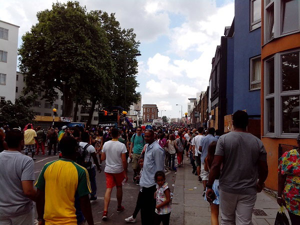
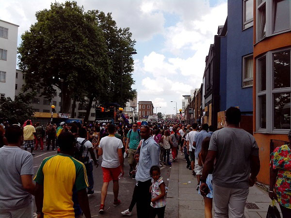

There are few people who choose UK to work due to the language (english is the most used language) Specially in Spain because the proximity and the language studied in the school the adventure you should choose a place where begin to search. Since my point of view the better town is London for multiple factors:

 
A big quantity of employment offers not equal for another country, depends of the kind of job your salary could be double or triple than your country.
Martket is dinamic and there it is very important motivation to be long term in the country in qualify jobs.

A big quantity of employment offers not equal for another country, depends of the kind of job your salary could be double or triple than your country.
Martket is dinamic and there it is very important motivation to be long term in the country in qualify jobs.


However it is not good all it seems to be like, there are the next disadvantages:
 First you will have attention to work is having the number NIN (national isurance number) to be registered by the uk governement.
With that you could begin to accept jobs, and because is european country they will accept without a problem.
To get that you will ask for a appointment by phone where they will ask a serie of questions as your number phone and home address. It is important in this kind of interview because if not
you will not get the appointment and the NIN, and having a home address, depending of where you live there will correspond you jobcenter u other.
First you will have attention to work is having the number NIN (national isurance number) to be registered by the uk governement.
With that you could begin to accept jobs, and because is european country they will accept without a problem.
To get that you will ask for a appointment by phone where they will ask a serie of questions as your number phone and home address. It is important in this kind of interview because if not
you will not get the appointment and the NIN, and having a home address, depending of where you live there will correspond you jobcenter u other.
Normally the appointment is about two weeks to ask it, and once you have a NIN doing the papers to sign will be easier.
If you look for a good job, it could be done this kind of papers by the company you have applied.
It is neccesary have experience in UK and therefore have more options to have a better job.
Unfortunetly, most of the cases are not payed but sometimes the company pay life expenses like food and transport.
In this time that normally is about six months you will live not in the conditions you probably expect but you will have a good knowledge about how is work in england.
However you will improve your tecnical english and establish contacts than could give you the link to go to other companies with a better contract.
Some interesting links:
This browsers will help you to see the different offers and specially the range of salaries where will be allocated your future job and the common places where there are located. If you are thinking about do the search in your country, to save expenses, I recommend you to get a british english SIM and change your home address for a british address. They appreciate a lot the sooner availability and people who are proactive to move a country to find a job right there better than people than are waiting for the job come to them.
If you have a superior titulation and experience looking for a job in UK will be easy.
Although not having experience in UK your first job will give you a salary below the average in most of the cases.
Once you have been working for one year, you could have the option to apply for better jobs and conditions.
Normally if you are registered in multiple sites and you have experience there even if you are not doing an effort to look for the job.
If you have updated your profile you will receive a lot of offers and if you look some interest you will have the possibility to choose between different jobs.
There are a big quantity of job offers and frequently it is hard for the recruiters to find it because most of the people with a profile like than are already working.
When I ended my job in UK at my first job for reasons outside the worker, a movement country for the project and the recruiters know about the company will do that i received a lot of calls even the same day to have different jobs of recruiters interested.
With the little agencies you could speak more relaxed and you should have a personal recruiters list each time you are thinking of change of job.
Because of the market there is very dinamic even if it was your problem be fired that is not very relecant for the recruiters.
They will explain different motivations to change the job and grace to they have spoken a lot with the companies they try to hire for it will be easier than you contact directly.
In addition, normally the money they receive the recruiters it is specific and this is not along with the time like in other european countries than it seem the agency is keep part of your salary forever
Here is show a big range of little agencies to have a close contact with them. Having the possibility to know exactly what you are looking for and having the possibility to keep the contact for future offers or situations.
© 2016 - All Rights Reserved - Diseñada por Sergio López Martínez
![[Valid RSS]](https://www.feedvalidator.org/images/valid-rss-rogers.png "Validate my RSS feed")